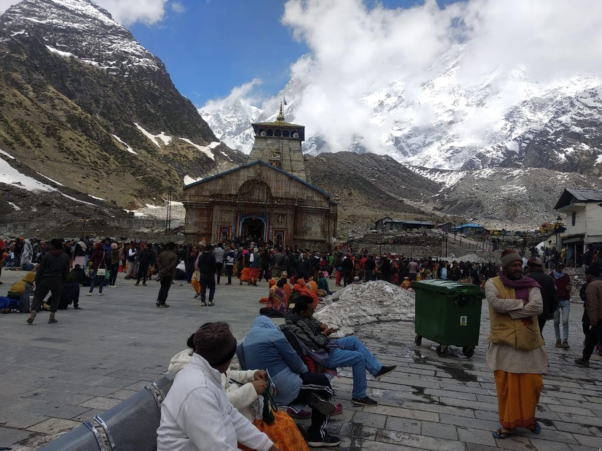
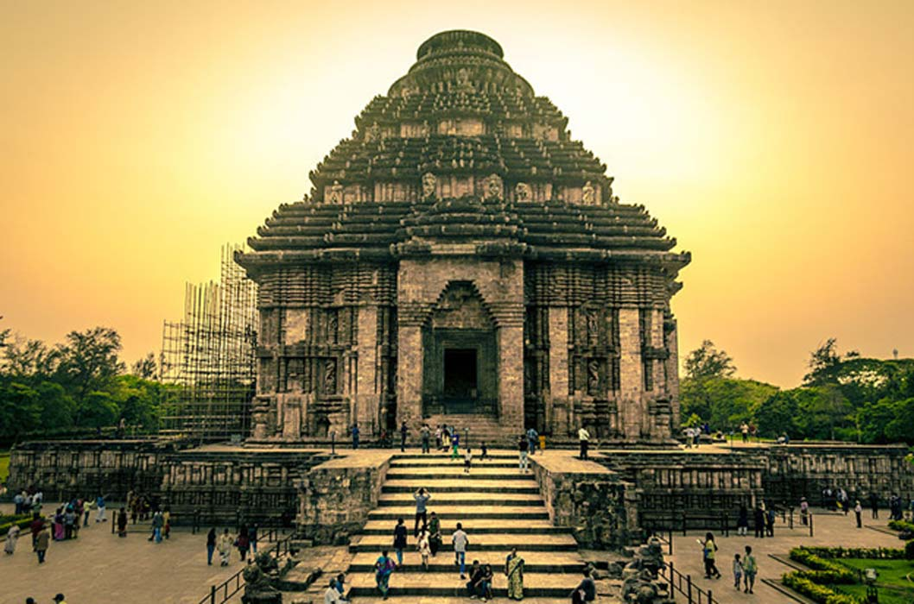
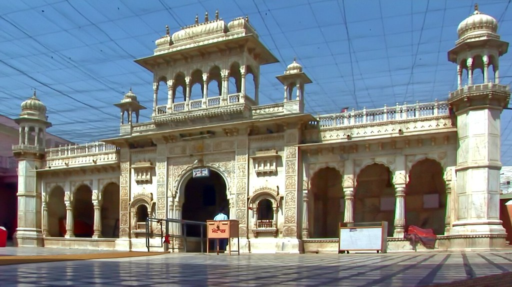
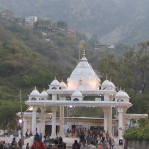

1. Kedarnath Temple, Uttarakhand
It is situated in the Himalayan range of Garhwal area which is in the state of Uttarakhand, Kedarnath Temple is one of the most cherished
Shiva temples in the world. This holy house of Shiva is said to be constructed by the Pandavas to absolve for their fault faithful during
their battle with Kauravas. The temple was replaced by Adi Sankaracharya in the 8th century. The Chola is one of the Char Dhams of Uttarakhand
and desires a traveler to walk a distance of 14kms over the rolling outside. One can make use of pony or manchan to reduce the journey. Enclosed
by the iceberg and snow-protected mountain and existing at a height of 3,583 m. The temple is closed during winters due to strict cold
conditions. The idol of Lord Shiva is relocated to Ukhimath and devotion there throughout 5/6 months for which the intense conditions
overcome.

2. Sun Temple Konark, Odisha
The Sun Temple which is situated in the small town of Konark. It is situated in the Puri district of Odisha. This genius of
architecture is committed to Lord Sun and resembling his transport, the temple has been completed in the shape of a wagon which has
twelve wheels and is exposed as being transport by the seven horses.The temple is considered to be constructed in the 13th century
by the king called Narasimhadeva, which like the most things in India. This temple has to association with a few traditions. As per
the tradition, God Krishna blessed which is one of his own sons with leprosy. Samba worship Lord Sun for a period of twelve years.
The affection Sun improved him. Samba formed the Sun temple in return to consider his recognition.

3. Karni Mata Temple deshonke, Rajasthan
Karni Mata Temple is a Hindu temple dedicated to Karni Mata at Deshnoke, 30 km from Bikaner, in Rajasthan, India.
It is also known as the Temple of Rats. The temple is famous for the approximately 25,000 black rats that live, and are revered, in the
temple. These holy rats are called kabbas, and many people travel great distances to pay their respects. The temple draws visitors from
across the country for blessings, as well as curious tourists from around the world.

4. Vaishno Devi Mandir, Jammu & Kashmir
It expedition of around 12 km from Katra, one reaches the holy cavity, which is the address of Mother Vaishno Devi.
It is located at an altitude of 5200 ft in a mountain which is called Trikuta. It is situated in Jammu and Kashmir,
it nearest to Katra town. Vaishno Devi Mandir is instant in the form of three rock heads which is called the Pindies
instead of a statue. Due to the conviction of the people, lots of people come to take the dedication of Mother Vaishno
Devi in every year. Mother Vaishno who choose her visitors. She also calls her believer to her doorsteps. Anyone making
a prosperous journey to her temple which is there because of her intention. The temple is open round in all year.